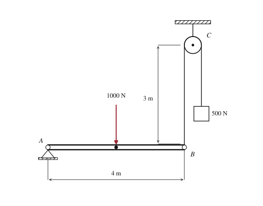
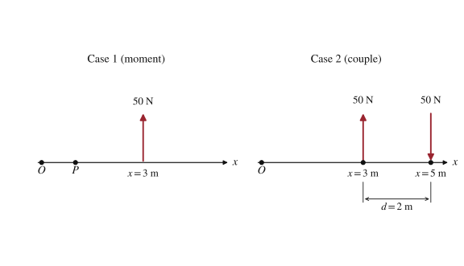
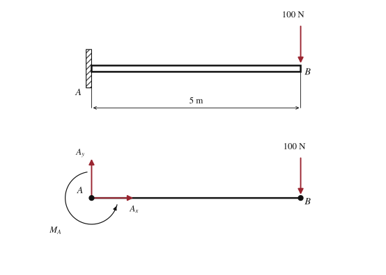

MECH 223-002 · Fall 2026 · Week 11
Muddiest Point 19 study guide
Your comments plus Beer 12e, Chapter 4. Monday, Nov 2.
This page is a study copy built from the Monday Nov 2 comments (MP19, 18 responses, 18 with text). Lecture covered equilibrium of rigid bodies with focus on supports, reactions (pins, pulleys, multi-force bodies), and the distinction between moments and couples (Sec. 4.1–4.3). About 8 responses said nothing was unclear. The rest asked for more practice with multi-force problems and pulleys, clarification on moment versus couple, help determining support force directions, and study strategies. Section numbers follow Beer, Johnston, Mazurek, Vector Mechanics for Engineers: Statics, 12e, Chapter 4.
Snapshot
| Theme | \(n\) | Section below |
|---|---|---|
| Practice requests (multi-force, pulleys, HW6) | 2 | 1 |
| Moment vs couple | 1 | 2 |
| Support force directions | 1 | 3 |
| Study strategies | 1 | 4 |
| Clear / no muddy point | 8 | — |
| Other truncated/vague comments | 5 | — |
What you told us Monday (summarized)
18 text responses. Summarized, not quoted, because this copy is posted on the open web.
- 8 of you said nothing was confusing or that the lecture was clear.
- Two of you asked for more practice with multi-force rigid body problems and pulley systems, including complex problems like HW6 Q3.
- One of you asked about the specific difference between a moment and a couple.
- One of you asked for help knowing what direction support forces should be pointed.
- One of you asked about the best way to study.
- Several responses were truncated mid-sentence; if you have additional questions, please post on Canvas or visit office hours.
1. Practice with multi-force rigid bodies and pulleys (Sec. 4.3–4.4)
Theme: working multi-force equilibrium problems involving pulleys and complex support reactions.
For multi-force rigid body problems, the equilibrium equations are:
These three equations can be solved for up to three unknowns (forces or angles). The key steps are:
Step-by-step equilibrium workflow:
- Draw a clear free-body diagram (FBD). Isolate the body and show all external forces (applied loads, reactions at supports, cable tensions, weights).
- Label all known and unknown forces. Use consistent notation: \(A_x\), \(A_y\) for pin reactions, \(T\) for cable tension, etc.
- Choose a moment center strategically. Summing moments about a point where multiple unknown forces intersect eliminates those unknowns from the moment equation, simplifying the algebra.
- Write the equilibrium equations. For 2D problems: \(\sum F_x=0\), \(\sum F_y=0\), \(\sum M_O=0\). For 3D: add \(\sum F_z=0\), \(\sum M_x=0\), \(\sum M_y=0\), \(\sum M_z=0\).
- Solve the system. Start with the equation that has the fewest unknowns. Check your work by verifying equilibrium about a different point.
Pulleys and cable tensions
For ideal pulleys (frictionless, massless):
- The tension is constant throughout a continuous cable that passes over one or more pulleys.
- The cable exerts a force on the pulley (or the body it is attached to) in the direction along the cable at the point where the cable leaves the pulley.
- For a cable that changes direction at a pulley, the pulley feels two tension forces (one from each side of the cable), each with magnitude \(T\) but pointing along their respective cable segments.
Common mistake: Forgetting that a cable wrapped around a pulley exerts forces in multiple directions. Each cable segment pulls along its own direction. When you draw the FBD, show the tension force vector pointing along each cable segment that touches the body.
Worked example: beam with pulley
Beam \(AB\) is 4 m long, pinned at \(A\). A 1000 N load acts downward at the midpoint (\(2\) m from \(A\)). At \(B\), a cable runs vertically up to a frictionless pulley \(C\) (3 m above \(B\)), over the pulley, and down to a 500 N hanging weight. Ideal cable: \(T = 500\) N everywhere, and the segment at \(B\) pulls the beam straight up with 500 N.

Equilibrium:
Reactions: \(A_x = 0\), \(A_y = 500\) N up. The moment balance confirms the numbers are consistent.
Key insight for pulleys: The tension in an ideal cable is constant. At each point where the cable touches the body, draw a force arrow pointing along the cable segment's direction with magnitude \(T\). If the cable wraps around a pulley attached to the body, show two forces (one for each side of the cable). The rest is standard equilibrium: \(\sum F=0\), \(\sum M=0\).
Self-check: A horizontal beam of length 3 m is pinned at the left end \(A\) and held by a cable attached at the right end \(B\). The cable pulls up and to the right at \(60^\circ\) above horizontal, toward a fixed anchor. A 150 N load acts downward 1 m from \(A\). Neglect the beam weight. Find the cable tension \(T\) and the horizontal and vertical reactions at \(A\). (Hint: take moments about \(A\) first, so \(A_x\) and \(A_y\) drop out.)
Answer: self-check 1
\(\sum M_A=(T\sin60^\circ)(3)-(150)(1)=0\Rightarrow T\sin60^\circ=50\) N, so \(T=57.7\) N and \(T\cos60^\circ=28.9\) N. Then \(\sum F_x=A_x+28.9=0\Rightarrow A_x=-28.9\) N (28.9 N to the left), and \(\sum F_y=A_y-150+50=0\Rightarrow A_y=100\) N upward.2. Moment vs. couple (Sec. 4.3, 4.5)
Theme: understanding the difference between a moment and a couple, even though both are measured in N·m.
A moment is the rotational effect of a single force about a point:
where \(d\) is the perpendicular distance from point \(O\) to the line of action of \(\mathbf{F}\). The moment depends on the point \(O\): if you move to a different point \(P\), the moment changes (unless the force passes through both points or the two points lie on a line parallel to \(\mathbf{F}\)).
A couple is formed by two equal, opposite, parallel forces separated by a distance \(d\):
The couple produces a pure rotation with no net force (\(\sum \mathbf{F}=0\)). The magnitude of the couple moment is \(Fd\), and the direction is perpendicular to the plane of the two forces (use the right-hand rule). Crucially, the couple moment is the same about any point in space. It is a free vector: you can move it anywhere on the body without changing its effect.
Key distinction: A moment of a force about a point depends on which point you choose. A couple moment is independent of the reference point. Both have units N·m and represent rotational effects, but a couple is fundamentally different: it is a pure torque with no translational effect.
Why the formulas look the same
The formula \(M=Fd\) appears in both contexts:
- For a single force, \(M_O=Fd\) where \(d\) is the perpendicular distance from point \(O\) to the force's line of action. Change \(O\), and \(d\) (and thus \(M_O\)) changes.
- For a couple, \(M=Fd\) where \(d\) is the separation between the two forces. This \(M\) does not depend on any reference point; it is the same everywhere.
The similarity is because both measure rotational effect (force times distance), but the application differs: one is tied to a point, the other is free.
Worked example: moment vs. couple

Case 1 (moment): A single 50 N force acts at \(x = 3\) m, upward. (a) About \(O\): \(M_O = (50)(3) = 150\) N·m CCW (\(+150\,\mathbf{k}\)). (b) About \(P\) at \(x = 1\) m: \(M_P = (50)(2) = 100\) N·m CCW. The moment depends on the reference point.
Case 2 (couple): 50 N up at \(x = 3\) m and 50 N down at \(x = 5\) m (\(d = 2\) m). The couple moment is \(M = 100\) N·m clockwise (\(-100\,\mathbf{k}\)).
Check (same sense about any point): about \(O\): \(+(50)(3) - (50)(5) = -100\); about \(P\) at \(x = 1\): \(+(50)(2) - (50)(4) = -100\); about any \(x_O\): \((3-x_O)(50) - (5-x_O)(50) = -100\), independent of \(x_O\).
Couple moment is constant: A couple has \(\sum \mathbf{F} = \mathbf{0}\); only the moment matters, and it is the same about every point.
Self-check: A couple consists of two 30 N forces: one to the right at \((0,0)\), one to the left at \((0,1)\) m. Find the couple moment magnitude and direction.
Answer: self-check 2
Magnitude \(M = (30)(1) = 30\) N·m. A 30 N force to the right at \((0,0)\) and 30 N to the left at \((0,1)\) m form a couple with \(\mathbf{r}=(0,1)\) m and \(\mathbf{F}=(-30,0)\) N on the top force: \(\mathbf{M} = \mathbf{r}\times\mathbf{F} = 0 - (1)(-30) = +30\,\mathbf{k}\) N·m, counterclockwise (bottom pushed right, top pushed left).3. Support force directions (Sec. 4.3)
Theme: determining what direction support reaction forces should point.
Each type of support constrains certain motions of the body, and the reaction forces (and possibly moments) correspond to those constraints. Here are the most common 2D supports:
| Support type | Constraints | Reactions | Unknowns |
|---|---|---|---|
| Pin (or hinge) | Prevents translation in x and y; allows rotation | Two force components: \(A_x\), \(A_y\) | 2 (magnitude and direction, or \(A_x\) and \(A_y\)) |
| Roller | Prevents translation perpendicular to the rolling surface; allows translation parallel and rotation | One force perpendicular to surface: \(R\) | 1 (magnitude; direction known) |
| Fixed (or built-in) | Prevents translation in x, y, and rotation | Two force components and one moment: \(A_x\), \(A_y\), \(M_A\) | 3 |
| Cable or link | Prevents separation along the cable/link direction; allows rotation at ends | One force along the cable/link (tension or compression): \(T\) or \(C\) | 1 (magnitude; direction along member) |
Rule of thumb: A support reaction opposes the motions that the support prevents. If the support prevents motion in a direction, there is a reaction force in that direction. If the support prevents rotation, there is a reaction moment.
Pin support details
A pin (or hinge) allows the body to rotate freely, but it cannot translate. Therefore, the pin exerts two reaction forces: one horizontal (\(A_x\)) and one vertical (\(A_y\)). The directions are unknown initially; we usually assume a direction (e.g., \(A_x\) to the right, \(A_y\) upward) and let the algebra determine the sign. A negative result means the force actually points opposite to our assumption.
Roller support details
A roller support allows the body to roll along a surface and to rotate, but it prevents motion perpendicular to the surface. The reaction is a single force \(R\) perpendicular to the rolling surface. For a roller on a horizontal surface, \(R\) is vertical (usually upward). For a roller on an inclined surface at angle \(\theta\), \(R\) is perpendicular to the incline.
Fixed support details
A fixed (or built-in or clamped) support prevents all motion: translation and rotation. It provides two force reactions (\(A_x\), \(A_y\)) and one moment reaction (\(M_A\)). In 2D, this gives three unknowns, which can be solved using the three equilibrium equations \(\sum F_x=0\), \(\sum F_y=0\), \(\sum M_O=0\).
Worked example: identifying reactions
A beam of length 5 m is fixed at the left end \(A\) and free at the right end \(B\). A 100 N downward load acts at \(B\). Find the reactions at \(A\).

FBD: The fixed support at \(A\) provides \(A_x\), \(A_y\), and \(M_A\). The 100 N load acts at \(B\), 5 m from \(A\).
Equilibrium:
Sum moments about \(A\) (counterclockwise positive):
The reactions are \(A_x=0\), \(A_y=100\) N upward, and \(M_A=500\) N·m counterclockwise. The fixed support provides both force and moment to keep the beam in equilibrium.
Self-check: A horizontal beam of length 4 m is pinned at the left end \(A\) and supported by a roller at the right end \(B\). A 200 N downward load acts at the midpoint (2 m from \(A\)). Find the reactions at \(A\) and \(B\).
Answer: self-check 3
Pin at \(A\): \(A_x=0\), \(A_y=100\) N upward. Roller at \(B\): \(R_B=100\) N upward. (Sum moments about \(A\): \(-200(2)+R_B(4)=0\Rightarrow R_B=100\) N. Then \(\sum F_y=A_y+100-200=0\Rightarrow A_y=100\) N.)4. Study strategies for statics (general advice)
Theme: effective ways to study and master statics concepts.
Statics is a problem-solving course. Understanding the theory is important, but skill comes from practice. Here are proven study strategies:
Effective study workflow:
- Review lecture notes and textbook sections soon after class. Read the relevant Beer sections (listed in the lecture slides or Canvas modules). Identify the key formulas and concepts.
- Work example problems from the textbook. Start with the end-of-chapter problems that match the lecture topics. Try to solve them without looking at the solution first. If you get stuck, review the relevant section, then try again.
- Draw free-body diagrams for every problem. The FBD is the most important step. It forces you to identify all forces and choose a coordinate system. Most errors come from incomplete or incorrect FBDs.
- Check your work. After solving, verify equilibrium by summing forces and moments about a different point than you used initially. If the sums are not zero, you made an algebra or sign error.
- Ask questions early. If a concept or homework problem remains unclear after you have tried the textbook examples, post your question on Canvas (with the problem number and what you have tried) or visit office hours. Do not wait until the night before the exam.
- Space your practice. Work a few problems each day rather than cramming all homework the night before it is due. Spaced repetition improves retention.
- Use recitation and office hours. Recitation (with Efe) covers additional examples. Office hours (times posted on Canvas) are available for one-on-one help. Bring specific questions.
Common pitfall: Trying to memorize problem patterns without understanding the underlying method. Statics problems vary widely in geometry and loading, so memorization does not work. Focus on the process: FBD → identify unknowns → write equilibrium equations → solve → check. This process applies to every problem.
Exam preparation tips
- Review past homework and quizzes. Exam problems are similar in style and difficulty to homework. Make sure you can solve the homework problems without referring to your notes.
- Practice under timed conditions. Give yourself a fixed time (e.g., 15 minutes per problem) and work through old homework problems. This builds speed and confidence.
- Identify your weak topics. If you consistently struggle with moments, or with 3D equilibrium, spend extra time on those sections. Use the Beer practice problems and ask for additional examples in office hours.
- Form a study group. Explaining a problem to a classmate is one of the best ways to solidify your understanding. If you can teach it, you know it.
Practice problems (Beer Ch 4)
To reinforce the concepts above, try these Beer 12e problems:
- Equilibrium of rigid bodies (2D): Problems 4.1, 4.2, 4.5, 4.6, 4.11, 4.12.
- Multi-force members with pins and rollers: Problems 4.17, 4.18, 4.21, 4.22.
- Pulleys and cables: Problems 4.25, 4.26, 4.29, 4.30.
- Moments and couples: Problems 4.45, 4.46, 4.49, 4.50.
- Equilibrium in 3D: Problems 4.75, 4.76, 4.79, 4.80 (if 3D equilibrium was covered).
Work each problem step-by-step. Check your free-body diagrams with the textbook solutions (or ask in office hours if you are unsure). Watch for sign errors in moment calculations: define a positive direction (e.g., counterclockwise) and stick to it throughout the problem.
Page built Nov 3, 2026. Questions? Office hours or Canvas.